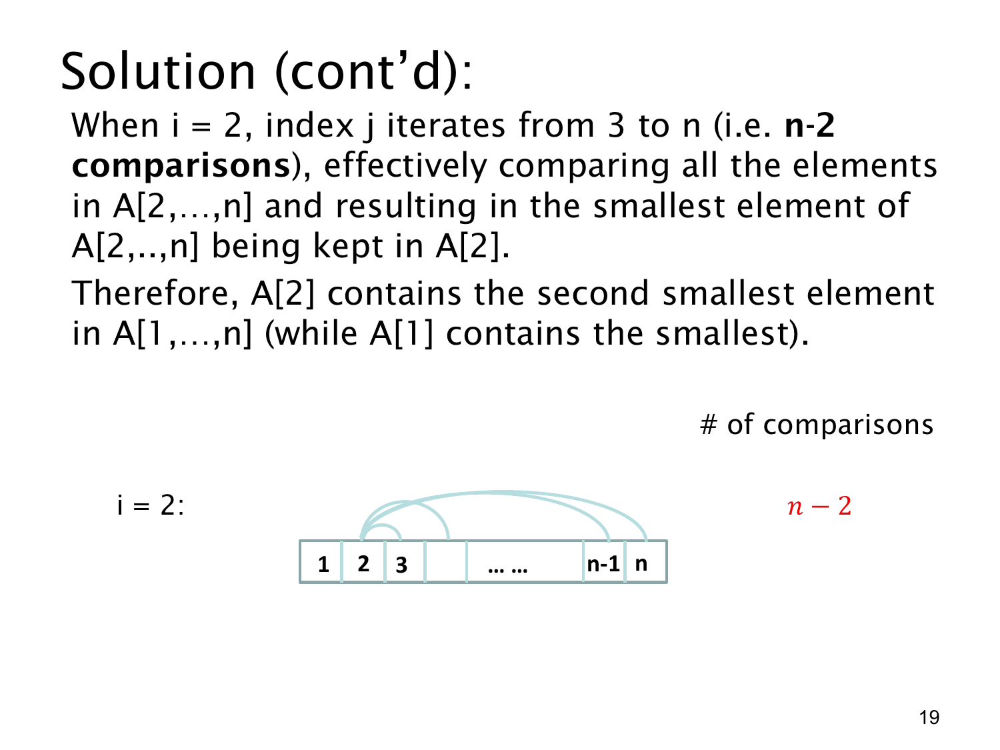

课件第 19 页讲解原文
查看这一页课件

排序的第二轮：只检查尚未排好的部分
这一页看 i=2 时发生什么。第一轮已经把整个数组的最小元素放在 A[1]，所以第二轮可以让位置 1 保持不动，只处理 A[2],…,A[n]。
内层 j 从 3 到 n。每次拿 A[2] 与 A[j] 比较，发现更小值就交换，把已检查部分中的最小值保留在 A[2]。本轮结束后，A[2] 就是剩余部分的最小元素，也就是整个数组按非降序排列后的第二个元素。
例如上一轮结束后的数组为 [1,5,4,3]：先比较 5 和 4，变成 [1,4,5,3]；再比较 4 和 3，变成 [1,3,5,4]。前两个位置已经正确，后面仍可继续排序。
图中弧线从位置 2 连到位置 3、4，直到位置 n。这次没有连回位置 1，因为那个位置已经处理完成。弧线数量，也就是比较次数，为：
n−3+1=n−2.
与第一轮的 n−1 次相比，第二轮少一次。这展示出一个规律：每一轮确定一个位置，下一轮需要检查的范围便减少一个元素。
如果数组存在重复值，“第二小”应理解为排序后的第二个元素，允许它与最小值相等。例如 [1,1,3] 的前两个值都是 1。这不影响每轮的比较次数，也不影响按非降序排序的结论。